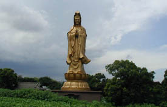
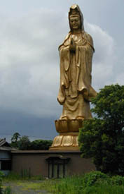
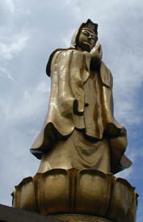
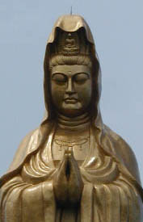
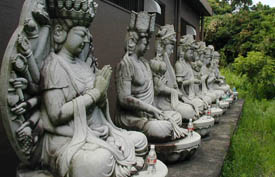
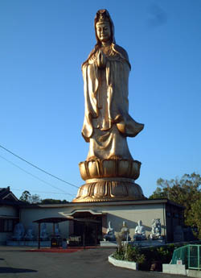

谷山の大観音/鹿児島県鹿児島市
鹿児島市南部の谷山地区。近くには動物園やプールなどがあるサバービアな風景の中、突如、大観音があらわれる。

いつもながら大観音のある風景というものは周囲との違和感ばかりが目立つがこの大観音も例外ではない。
呑気な風景を一瞬にして解体してくれる。
しかしこの大観音、これまで訪れた大観音とは全く違う。
それは・・・
大観音の他になーんにもないのだ。
  
誰が何時、何のためにつくったのか、一切が謎である。
通常、大観音といえば客寄せ施設。従って設立者の偉業に始まり建設時期、製造法、身長、頭の大きさ、しまいには指の長さ鼻の穴の大きさなどが明記された説明書きの看板やら石碑がこれ見よがしに建てられているものだ。
ここにはその類いのものが一切なく、観音像の名前すら判らない。従って地名から谷山の大観音と勝手にネーミングさせてもらうことにした。
台座部分は何らかの建物になっているが中の様子は伺い知れない。隣に建物があるが何のための建物なのかも判らない。
宗教法人のものなのかどうかもわからない。
廃虚なのかも知れない、と思ったのだがその割には観音前の空き地の草の延び具合は微妙〜なところで、人が全く訪れないにしては草は延びていないが人が頻繁に訪れている風でもない。
引き返そうと思ったが、ふと横にまわると・・・

台座の右手には石像が並んでいた。ペットボトルに詰められた水だけが供えられている。
これだけがここが何らかの信仰施設であることを物語っている。
一切の意味合いを拒否したこの大観音、それは逆に大観音の本来の姿なのかもしれない。
純喫茶ならぬ純大観音。
道端にぽつんとある石像の巨大化版。でも路傍のお地蔵さんだって花は供えられている。
あまりにも寂し気な姿である。
2001.7.
情報提供はtiuさんです。
tiuさんのホームページ 街〜鹿児島・谷山〜
2005.6.29.
追記
現在、ここは大観音を中心に寺院運営が営まれているそうです。
何でも納骨堂を分譲中とか。

結局、大観音だけが完成していて、寺の整備がまだだった、という状態だったんですね。
情報、画像提供はのりもの万歳！のchomoさんです。
珍寺大道場 HOME